CITE Test Guide¶
A step by step guide to the GeoServer Compliance Interoperability Test Engine (CITE).
Check out OGC CITE suite tests¶
Note
The CITE suite tests are available at Open Geospatial Consortium.
Requirements:
- GeoServer instance.
- Teamengine Web Application, with a set of CITE suite tests.
make
CITE automation tests with docker¶
How to run the CITE Test suites with docker.
Requirements:
- Running the tests requires a Linux system with docker, docker-compose, and Git installed on it.
Note
The CITE tools are available in the build/cite folder of the GeoServer Git repository:
Set-up the environment¶
-
Clone the repository.
-
Go to the cite directory.
-
Inside you will find a structure, like below, with a list of directories which contains the name of the suites to run.
Running the suite tests¶
There are 2 ways to run the suites. One is running with make that will automate all the commands, and the second one is running the test through WebUI:
-
Running it through
Makefile:- run
makein the console, it will give you the list of commands to run.
- the output will look like this:
Usage: # Main targets in suggested order: war: Build the geoserver.war file to use for testing and place it in ./geoserver/geoserver.war build: suite=<suite> Build the GeoServer Docker Image for the Environment. test: suite=<suite> Run the Test Suite with teamengine and GeoServer on docker compose. clean: Clean the Environment of previous runs. # Additional helper targets: test-localhost: suite=<suite> Run the Test Suite against a local host GeoServer instance (http://172.17.0.1:8080) test-external: suite=<suite> iut=<landing URL> Run the Test Suite against a GeoServer instance at a provided URL version: suite=<suite> Print the version of the GeoServer on the current docker. ogcapi-features10-localhost: Shortcut for make test-localhost suite=ogcapi-features10 start: suite=<suite> [services=<s1 s2..>] Start the docker composition for suite. Optionally limit which services. stop: Shuts down the docker composition. Deos not remove logs/ print-services: suite=<suite> Print the service names and docker images used for a given suite webUI: Start teamengine in interactive mode for the OWS services (excludes ogcapi services).- Choose which test to run, this is an example:
!!! warning
The first Docker build may take a long time.!!! note
Valid values for the suite parameter are: : - wcs10 - wcs11 - wcs20 - wfs10 - wfs11 - wfs20 - wms11 - wms13 - wmts10 - ogcapi-features10 - geotiff11 - gpkg12- Build the
geoserver.warfile to test against :
- run
-
Build the GeoServer Docker image set up to run a specific test suite
- To clean the local environment.
- To build the GeoServer Docker image locally.
- Alternative, specify a
war_urlvariable to fetch thegeoserver.warfrom an URL:
The
war_urlcan point to a.waror.zipfile containing the.warlike inhttps://build.geoserver.org/geoserver/main/geoserver-main-latest-war.zip- To run the suite test.
- To run the full automate workflow.
Run CITE Test Suites on a local PC¶
Note
I assume that you have a standalone GeoServer running.
Important
Details to consider when you are running the tests:
- The default username/password for the teamengine webUI are teamengine/teamengine.
- the default URL for the teamengine webUI is http://localhost:8888/teamengine/
- The output of the old suite tests might not appear in the Result page. So you should click on the link below detailed old test report, to get the full report. Ex.
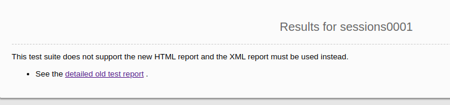
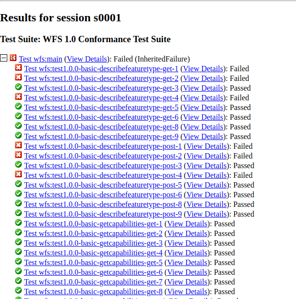
- Since you are running teamengine inside a container, the localhost in the URL of GeoServer for the tests can't be used, for that, get the IP address of the host where the GeoServer is running. You will use it later.
- after you log in to teamengine webUI you have to create a session.
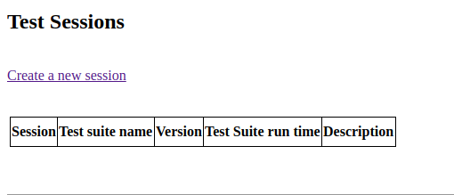
- to run the tests you have to choose which one you want, and then click on Start a new test session. This is an example:
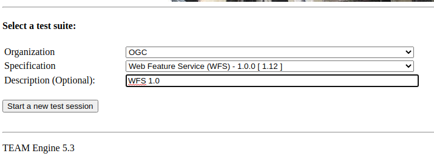
Requirements:
- GeoServer running.
- PostgreSQL with PostGIS extension installed. (only for the WFS Tests Suites)
-
Teamengine Running in docker container.
-
Clone the repository:
-
Change directory to the
cite -
Check the commands available:
- Run
maketo check:
- you should get an output as following:
- Run
Run WFS 1.0 tests¶
Important
Running WFS 1.0 tests require PostgreSQL with PostGIS extension installed in the system.
Requirements:
GeoServer running- teamengine
- PostgreSQL
-
PostGIS
-
Prepare the environment:
- login to PostgreSQL and create a user named "cite".
- Create a database named "cite_wfs10", owned by the "cite" user:
- enter the database and enable the postgis extension:
- Change directory to the citewfs-1.0 data directory and execute the script cite_data_postgis2.sql:
cd <path of GeoServer repository> psql -U cite cite < build/cite/wfs10/citewfs-1.0/cite_data_postgis2.sql- Start GeoServer with the citewfs-1.0 data directory. Example:
Important
/build/cite/wfs10/citewfs-1.0/workspaces/cgf/cgf/datastore.xml ::::::
-
Start the test:
-
Go to the browser and open the teamengine webUI.
- click on the Sign in button and enter the user and password.
-
after creating the session, and choosing the test, enter the following parameters:
-
Capabilities URLhttp://<ip-of-the-GeoServer>:8080/geoserver/wfs?request=getcapabilities&service=wfs&version=1.0.0 -
Enable tests with multiple namespacestests included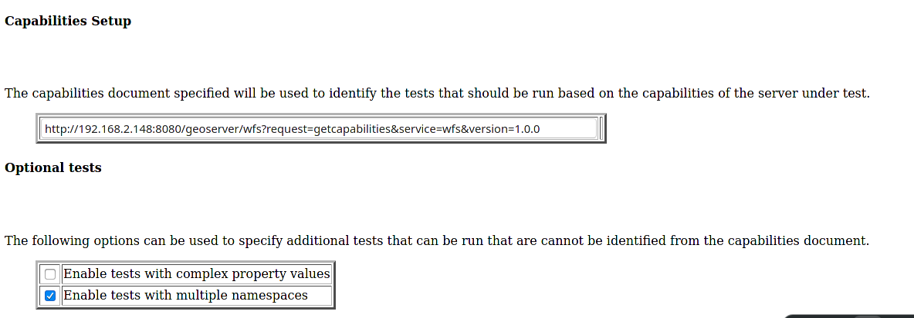
Run WFS 1.1 tests¶
Important
Running WFS 1.1 tests requires PostgreSQL with PostGIS extension installed in the system.
Requirements: - GeoServer - teamengine - PostgreSQL - PostGIS
-
Prepare the environment:
- login to PostgreSQL and create a user named "cite".
- Create a database named "cite_wfs11", owned by the "cite" user:
- enter to the database and enable the postgis extension:
- Change directory to the citewfs-1.1 data directory and execute the script dataset-sf0-postgis2.sql:
cd <path of GeoServer repository> psql -U cite cite < build/cite/wfs11/citewfs-1.1/dataset-sf0-postgis2.sql- Start GeoServer with the citewfs-1.1 data directory. Example:
Important
/build/cite/wfs11/citewfs-1.1/workspaces/cgf/cgf/datastore.xml ::::::
-
Start the test:
-
Go to the browser and open the teamengine webUI.
- click on the Sign in button and enter the user and password.
-
after creating the session, and choosing the test, enter the following parameters:
-
Capabilities URLhttp://<ip-of-the-GeoServer>:8080/geoserver/wfs?service=wfs&request=getcapabilities&version=1.1.0 -
Supported Conformance Classes:- Ensure
WFS-Transactionis checked - Ensure
WFS-Lockingis checked - Ensure
WFS-Xlinkis unchecked
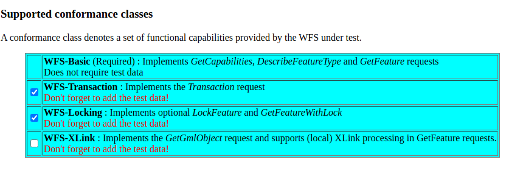
- Ensure
-
GML Simple Features:SF-0
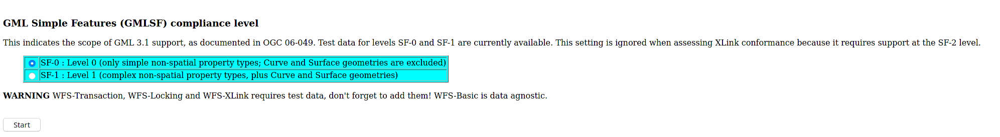
Run WMS 1.1 tests¶
- Prepare the environment:
- Start GeoServer with the citewms-1.1 data directory. Example:
-
Start the test:
-
Go to the browser and open the teamengine webUI.
- click on the Sign in button and enter the user and password.
-
after creating the session, and choosing the test, enter the following parameters:
-
Capabilities URLhttp://<ip-of-the-GeoServer>:8080/geoserver/wms?service=wms&request=getcapabilities&version=1.1.1 -
UpdateSequence Values:- Ensure
Automaticis selected - "2" for
value that is lexically higher - "0" for
value that is lexically lower
- Ensure
-
Certification Profile:QUERYABLE -
Optional Tests:- Ensure
Recommendation Supportis checked - Ensure
GML FeatureInfois checked - Ensure
Fees and Access Constraintsis checked - For
BoundingBox ConstraintsensureEitheris selected
- Ensure
-
Click
OK
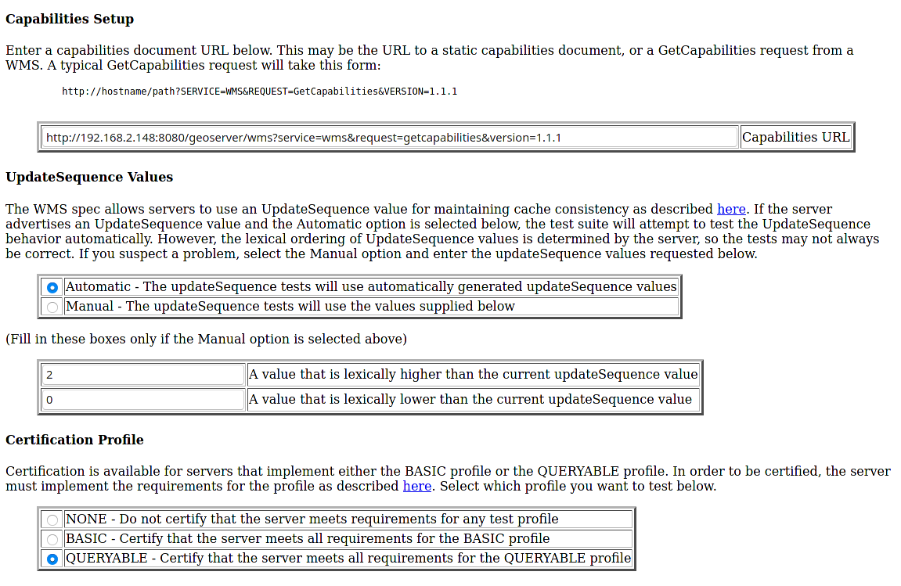
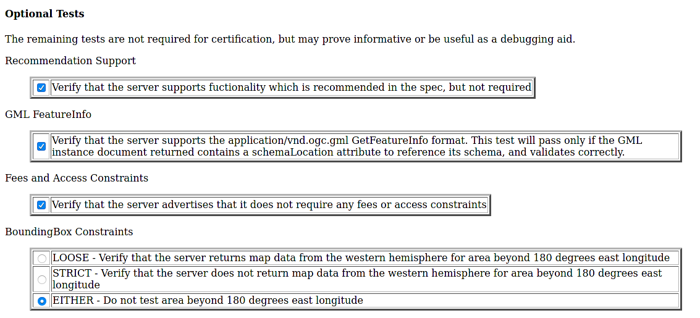
Run WCS 1.0 tests¶
- Prepare the environment:
- Start GeoServer with the citewcs-1.0 data directory. Example:
-
Start the test:
-
Go to the browser and open the teamengine webUI.
- click on the Sign in button and enter the user and password.
-
after creating the session, and choosing the test, enter the following parameters:
-
Capabilities URL:http://<ip-of-the-GeoServer>:8080/geoserver/wcs?service=wcs&request=getcapabilities&version=1.0.0 -
MIME Header Setup: "image/tiff" -
Update Sequence Values:- "2" for
value that is lexically higher - "0" for
value that is lexically lower
- "2" for
-
Grid Resolutions:- "0.1" for
RESX - "0.1" for
RESY
- "0.1" for
-
Options:- Ensure
Verify that the server supports XML encodingis checked - Ensure
Verify that the server supports range set axisis checked
- Ensure
-
Schemas:- Ensure that
The server implements the original schemas from the WCS 1.0.0 specification (OGC 03-065is selected
- Ensure that
-
Click
OK
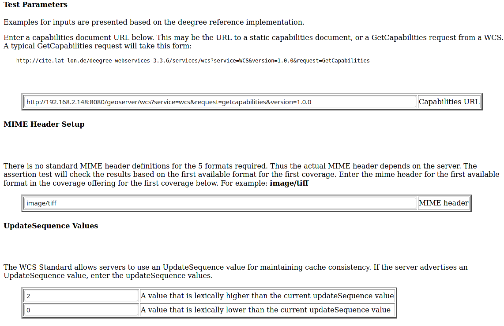
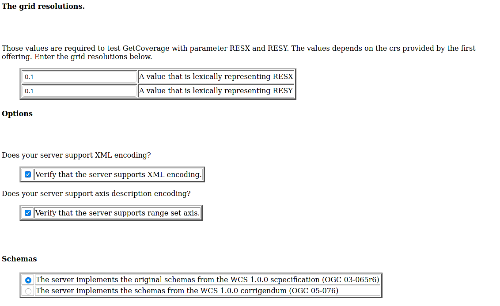
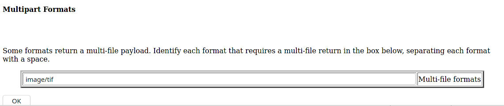
Run WCS 1.1 tests¶
- Prepare the environment:
- Start GeoServer with the citewcs-1.1 data directory. Example:
-
Start the test:
-
Go to the browser and open the teamengine webUI.
- click on the Sign in button and enter the user and password.
-
after creating the session, and choosing the test, enter the following parameters:
-
Capabilities URL:http://<ip-of-the-GeoServer>:8080/geoserver/wcs
Click
Next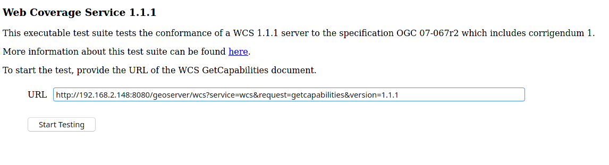
Run WMS 1.3 tests¶
- Prepare the environment:
- Start GeoServer with the citewcs-1.3 data directory. Example:
-
Start the test:
-
Go to the browser and open the teamengine webUI.
- click on the Sign in button and enter the user and password.
-
after creating the session, and choosing the test, enter the following parameters:
-
Capabilities URL:http://<ip-of-the-GeoServer>:8080/geoserver/wms?service=wms&request=getcapabilities&version=1.3.0 -
UpdateSequence Values:Automaticchecked
-
Options:- Ensure
BASICis checked - Ensure
QUERYABLEis checked
- Ensure
Click
OK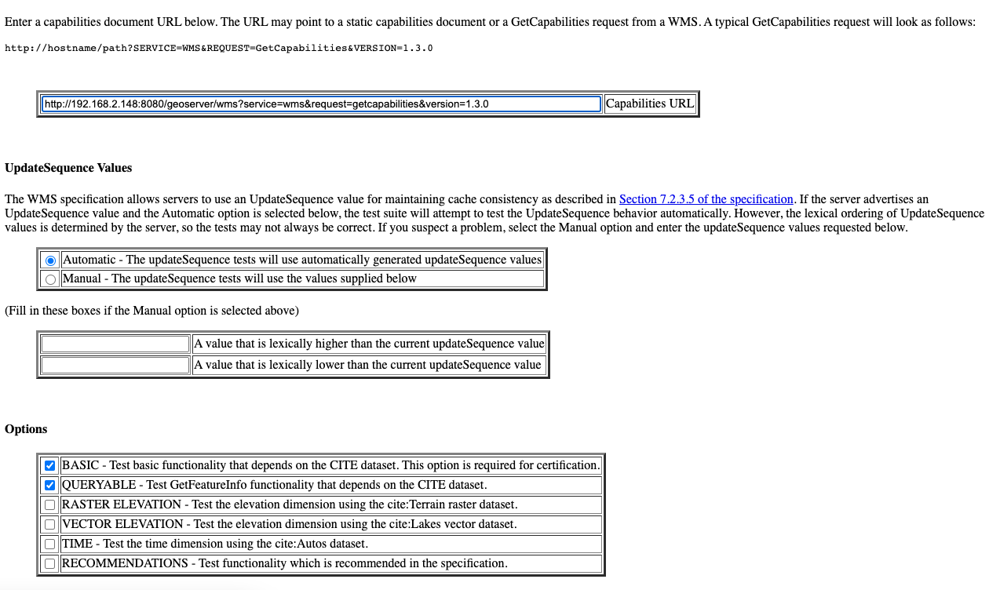
Run OGC Features 1.0 tests¶
Newer test suites like the ogcapi-features10 one, are executed by calling teamengine's REST API, with a teamengine Docker image provided by OGC (see Using the REST API section on the teamengine's user guide).
As a result of the test run, a logs/testng-results.xml file will be generated, and a human readable summary of test failures, if any, will be printed to the console.
Run with the locally built .war¶
Make sure you've prepared the geoserver.war as instructed above with make war.
If there are test errors, a human readable summary will be printed to the console, similar to this:
test-method: verifyCollectionsPathCollectionCrsPropertyContainsDefaultCrs description: Implements A.1 Discovery, Abstract Test 2 (Requirement /req/crs/fc-md-crs-list B), crs property contains default crs in the collection objects in the path /collections depends-on-groups: crs-conformance status: FAIL exception: Collection with id 'sf:restricted' at collections path /collections does not specify one of the default CRS 'http://www.opengis.net/def/crs/OGC/1.3/CRS84' or 'http://www.opengis.net/def/crs/OGC/0/CRS84h' but provides at least one spatial feature collections Request URI: test-method: verifyCollectionsPathCollectionCrsPropertyContainsDefaultCrs description: Implements A.1 Discovery, Abstract Test 2 (Requirement /req/crs/fc-md-crs-list B), crs property contains default crs in the collection objects in the path /collections depends-on-groups: crs-conformance status: FAIL exception: Collection with id 'sf:roads' at collections path /collections does not specify one of the default CRS 'http://www.opengis.net/def/crs/OGC/1.3/CRS84' or 'http://www.opengis.net/def/crs/OGC/0/CRS84h' but provides at least one spatial feature collections Request URI: Passed: 2153 Failed: 9 Skipped: 96 make[2]: *** [validate-testng-results] Error 1 make[1]: *** [test-rest] Error 2 make: *** [test] Error 2
Either way, both the teamengine and geoserver containers will keep on running.
Run make clean to shut them down and clean up the logs/ directory.
Test a GeoServer instance external to the docker composition¶
Since teamengine runs as a Docker container, in order to reach out to a GeoServer instance running on the host, it needs a Landing Page URL that points to the host network. In docker there's a special IP address for that purpose, 172.17.0.1, as long as the container is running on the default docker bridge network. Check out the docker docs for more info.
Attention
In the following examples, some make targets receive an iut parameter with the URL of the OGC Features API landing page to test, external to the teamengine's container network. By default, for Linux systems, use the 172.17.0.1 IP address. However, if you're running the tests on MacOS, replace it with the host.docker.internal hostname instead. This difference exists because on Linux, Docker creates a bridge network where the host is accessible via 172.17.0.1. On MacOS, Docker Desktop for Mac runs containers within a virtualization layer, which changes the networking model. As a result, host.docker.internal is used to enable containers to access the host.
For the case of the ogcapi-features10, you can simply run
And it'll print out
The ogcapi-features10-localhost target is a special case of test-external, which assumes the most common case of GeoServer running on localhost:8080.
During development or troubleshooting, you might want to either use a different GeoServer port, or test only a specific workspace or feature type. For that you can use a custom iut (Instance Under Test) URL for the test-external make target. For example, to hit a GeoServer instance running on the host at port 9090, and address only the sf:archsites layer, you can use a iut URL combining the 172.17.0.1 IP address and GeoServer's /sf/archsites virtual service:
And it'll print out
Finally, run
to stop the docker composition and clean up the logs/ directory, or
to just shut down the docker composition without cleaning up the logs/ directory.
GitHub Actions[]{#commandline}¶
In order to keep up to date, a CITE Tests workflow runs automatically on each PR.
CITE Certification¶
Shortly before a major (2.xx.0) release, the following process should be followed in order to obtain CITE Certification for the major release.
Note
We appreciate OSGeo providing hosting services for this purpose.
-
Log into cite.geoserver.org via hop, then
-
Create a local docker image tagged
geoserver-docker.osgeo.org/geoserver:2.27.xfrom the latest nightly build at https://build.geoserver.org/geoserver/2.27.x using the build steps from https://github.com/geoserver/docker.git -
Checkout the latest CITE tests from https://github.com/geoserver/geoserver.git and change the GeoServer Admin password
-
Start up the Docker services (PostgreSQL & 7x GeoServer instances) against an empty database directory
This will spin up a PostgreSQL service which will be populated with 3 different WFS databases if the database is empty (using the cite init-scripts in build/cite/wfsxx/).
It will also spin up 7 GeoServer services, typically 1 data directory per CITE test (e.g. wfs20), although it is noted that features10, wmts10, wms11 and wms13 all run off the same wms13 data directory, and wcs20 and geotiff11 use the wcs11 data directory.
-
Log into https://cite.opengeospatial.org/teamengine and if necessary create Test Sessions for all the tests that GeoServer should pass:
- OGC API - Features 1.0 https://g1.cite.geoserver.org/geoserver/cite/ogc/features/v1
- Web Map Tile Service (WMTS) 1.0.0 https://g1.cite.geoserver.org/geoserver/gwc/service/wmts?service=WMTS&request=GetCapabilities&AcceptVersions=1.0.0
** - Web Map Service (WMS) 1.3.0 https://g1.cite.geoserver.org/geoserver/cite/wms?service=wms&request=GetCapabilities&version=1.3.0
- Web Map Service (WMS) 1.1.1 https://g1.cite.geoserver.org/geoserver/cite/wms?service=wms&request=GetCapabilities&version=1.1.1
- Web Feature Service (WFS) 2.0 https://g2.cite.geoserver.org/geoserver/wfs?service=wfs&request=GetCapabilities&version=2.0.0
- Web Feature Service (WFS) 1.1.0 https://g3.cite.geoserver.org/geoserver/wfs?service=wfs&request=GetCapabilities&version=1.1.0
- Web Feature Service (WFS) 1.0.0 https://g4.cite.geoserver.org/geoserver/wfs?service=wfs&request=GetCapabilities&version=1.0.0
- Web Coverage Service (WCS) 2.0.1 https://g5.cite.geoserver.org/geoserver/wcs?service=WCS&request=GetCapabilities&version=2.0.1 (yes, uppercase WCS is needed)
** - Web Coverage Service (WCS) 1.1.1 https://g5.cite.geoserver.org/geoserver/wcs?service=wcs&request=GetCapabilities&version=1.1.1
- Web Coverage Service (WCS) 1.0.0 https://g6.cite.geoserver.org/geoserver/wcs?service=wcs&request=GetCapabilities&version=1.0.0
- GeoPackage 1.2 https://g7.cite.geoserver.org/geoserver/topp/ows?service=WFS&version=1.0.0&request=GetFeature&typeName=topp:states&outputFormat=application/geopackage%2bsqlite3
- GeoTiff 1.1 https://g5.cite.geoserver.org/geoserver/wms?service=WMS&version=1.1.0&request=GetMap&layers=topp:tazbm&bbox=146.49999999999477,-44.49999999999785,147.99999999999474,-42.99999999999787&width=767&height=768&srs=EPSG:4326&styles=&format=image/geotiff
Follow the Run xxx tests instructions above for all the tests settings. Run them one at a time, it should take less than 1 hour to complete, sometimes with manual visual checks (WMS).
**These ones are currently still failing. -
Note all the test sessions that passed (hopefully all of them!) and provide these to our OSGeo contact (currently kalxas), along with your TE username and password (yes, ridiculous!)
-
On https://portal.ogc.org/public_ogc/implementing, he will create a new product
GeoServer 2.27, link the test sessions to the product (and for each: Request Consideration for Reference Implementation), and then submit the product to OGC for certification, which should take xx days. -
Include the certification badges in the release notes.